The secondary teacher has knowledge of literacy and mathematics and is an expert in his or her content endorsement area(s).
Teachers provide instruction that is aligned with the Colorado Academic Standards and their district's organized plan of instruction.
RationaleThe standard that I taught was listed at the top of the lesson plan, and covered with the students at the beginning of the lesson. I explored the standard through enduring understandings, building background, and essential questions throughout the lesson.
Teachers develop and implement lessons that connect to a variety of content areas/disciplines and emphasize literacy and mathematics.
RationaleThe first book we read in class was The Curious Incident of the Dog in the Night-Time. The book is about Christopher, a 15 year old on the autism spectrum who investigates the murder of a dog in his neighborhood. Since the way that Christopher thinks is very math-oriented, math is frequently worked into the narrative. The example here is from a discussion of the "Monty Hall Problem," a famous and apparently paradoxical probability problem. Reading The Curious Incident let students think about math in the context of literature.
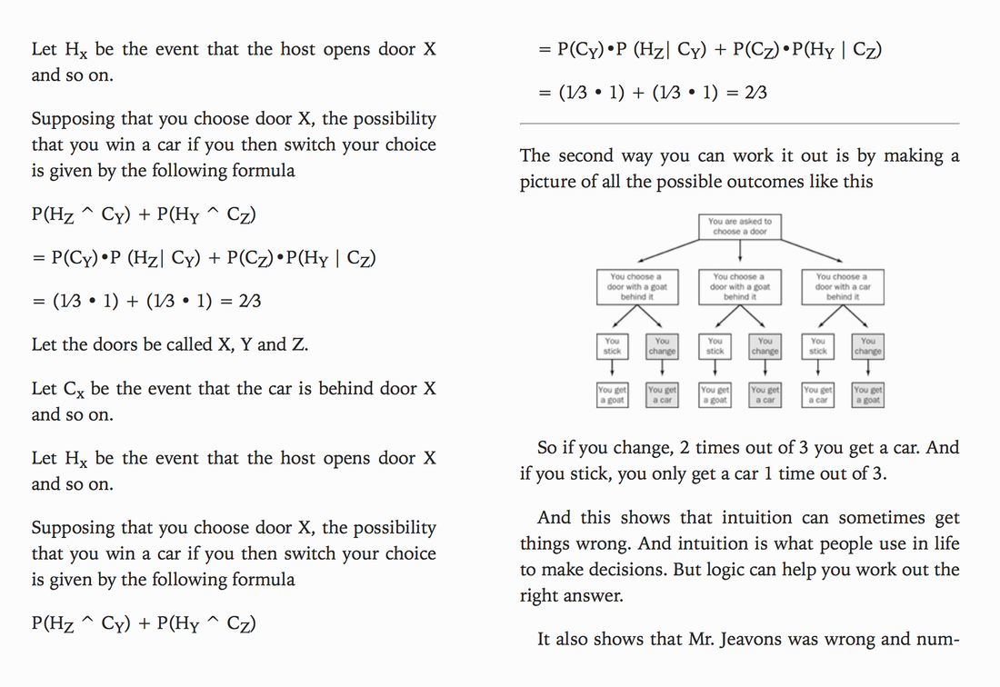
Teachers demonstrate knowledge of the content, central concepts, inquiry, appropriate evidence-based instructional practices, and specialized characteristics of the disciplines being taught.
RationaleMy experience as an English major with a focus in Creative Writing at the University of Colorado taught me the knowledge and skills of literature necessary to teach in an English classroom. I am a firm believer in the workshop model, an evidence-based instructional practice that lets students actively construct their own learning. I passed the Praxis with an above-average score.
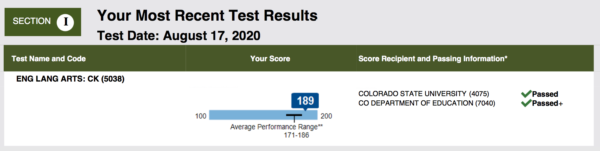
Teachers foster a predictable learning environment characterized by acceptable student behavior and efficient use of time in which each student has a positive, nurturing relationship with caring adults and peers.
RationaleEarly on in first semester, in a unit on Life of Pi, I created an assignment to write about a memory in a memoir style, sticking to the facts, and a fantastical style, where you could make up whatever you wanted to tell the story. One student turned in a brilliant essay, but one that raised alarm bells for the mild suicidal ideation towards the end. I reached out to the student and we talked about the issue, and she later talked about it with her counselor. I think escalating the matter to professionals was the right course of action, and it helped me build a positive relationship with the student.
"Hi [student], I wanted to thank you for sharing your story again, it was very beautiful. I was a little bit alarmed by the last paragraph—while I know that it was about overcoming, the phrase 'I knew it was a matter of time before I got lucky' set off alarm bells. I mentioned it to [my mentor teacher] and he said to mention it to [the counselor], so I talked to her and she said she would bring it up with [the therapist]. Again, I admire your struggle and I'm glad you are working through it in your writing, and I don't want you to censor yourself in future writing. I just want you to know that we care about your safety and that is our priority."
Teachers demonstrate an awareness of, a commitment to, and respect for multiple aspects of diversity, while working toward common goals as a community of learners.
RationalePolaris is a school that hosts a diverse community. The school is a safe space for students of all colors of the LGBTQ+ spectrum. For its role in building this community, the school was awarded with the Lavender Graduation Award from PFLAG. PFLAG is the first and largest organization for lesbian, gay, bisexual, transgender, and queer (LGBTQ+) people, their parents and families, and allies. The diversity of the students in the school is celebrated and cherished. Being in this environment has been a wonderful experience where I learn more about my students and myself every day.
For an in-class activity after watching the Spike Lee film Do the Right Thing, I created an activity for students to explore the history and context of social justice movements. Students could pick two out of four activities: one exploring the speeches of Martin Luther King and Malcolm X, who both feature prominently in the film; one exploring incidents of racial violence in the 1980s and today; one independently finding articles on the Civil Rights Movement and the Black Lives Matter movement; and one exploring the song lyrics of Public Enemy, who were a prominent part of the film, and Kendrick Lamar, an important part of the soundtrack of the Black Lives Matter movement. This activity was challenging given the sensitive nature of the subject matter, but I think that the students learned and grew from it.
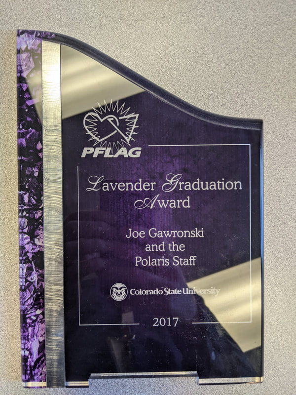
📄 Do the Right Thing: Social Justice Activity ↗Teachers engage students as individuals, including those with diverse needs and interests, across a range of ability levels by adapting their teaching for the benefit of all students.
RationaleEvery classroom has students with diverse needs. Differentiation is important in every classroom. This is something it has been hard for me to learn and employ, but is one of the most rewarding aspects of teaching.
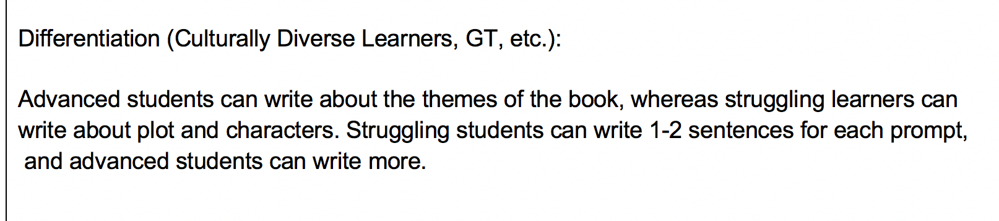
Teachers work collaboratively with the families and/or significant adults for the benefit of students.
RationaleFor the second unit of my 9th grade English class I decided to have the students read a choice book. Research shows this is an effective way to build advanced literacy in teens. In order to get buy-in from the parents, I decided to send out an email detailing the unit, some of the books their kids might want to buy, and books we had in the classroom for students for whom it was a difficulty to buy books. Working collaboratively with the parents in this way will help to build success for the students.
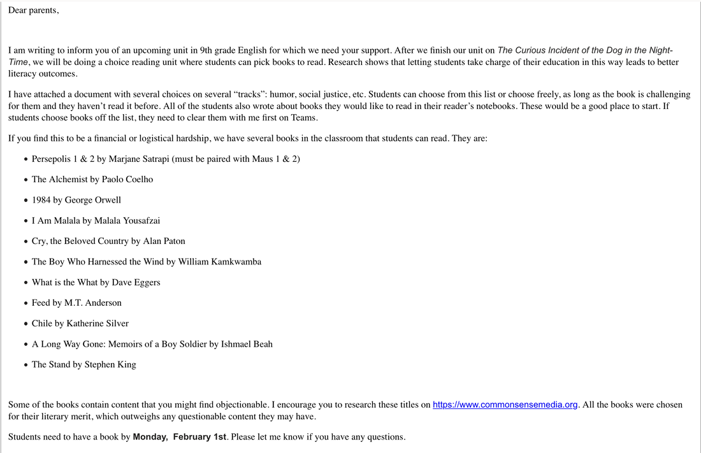
Teachers demonstrate knowledge about the ways in which learning takes place, including the levels of intellectual, physical, social, and emotional development of their students.
RationaleWhen reading To Kill a Mockingbird, one student expressed discomfort at the racial content of the book and the discussions we were having. Some discomfort can be necessary for learning, but it is not acceptable for a student to feel unsafe in the classroom. While changing the book or the subject matter at this point in the unit was not feasible, I took the steps of reminding the students to be respectful and open minded each discussion, to discuss rather than debate, and to monitor specific students who were an issue. The most important step I took was checking in with the student who was feeling uncomfortable. Finally, I have been reflecting on my decision to teach To Kill a Mockingbird. While I believe it is a great piece of literature and worth teaching, others have brought to my attention that it would be better to teach works written by Black authors when dealing with racism. Others have also pointed out that the book may make Black students feel unduly uncomfortable or unsafe, and that the book contains white savior tropes. Therefore, I will teach more inclusive works in the future and consider whether To Kill a Mockingbird is a good choice in my curriculum.
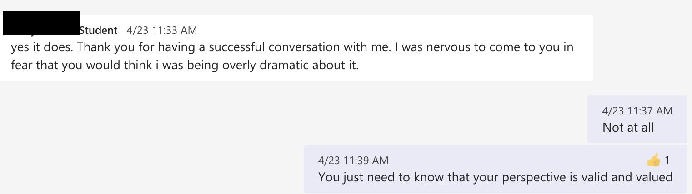
Teachers use formal and informal methods to assess student learning, provide feedback, and use results to inform planning and instruction.
RationaleIn the classroom, it is important to have methods of assessment that are formal, informal, and in between. Formal assessments that I have used include character sketches and three paragraph essays. Informal assessments include discussions and informal quizzes. No Red Ink is a solution that is in between formal and informal—it can be completed quickly and does not "feel" like an assessment, but it provides data I can use to modify my instruction. In this case, it tells me that most of my students master the comma skills, but one student needs targeted instruction.
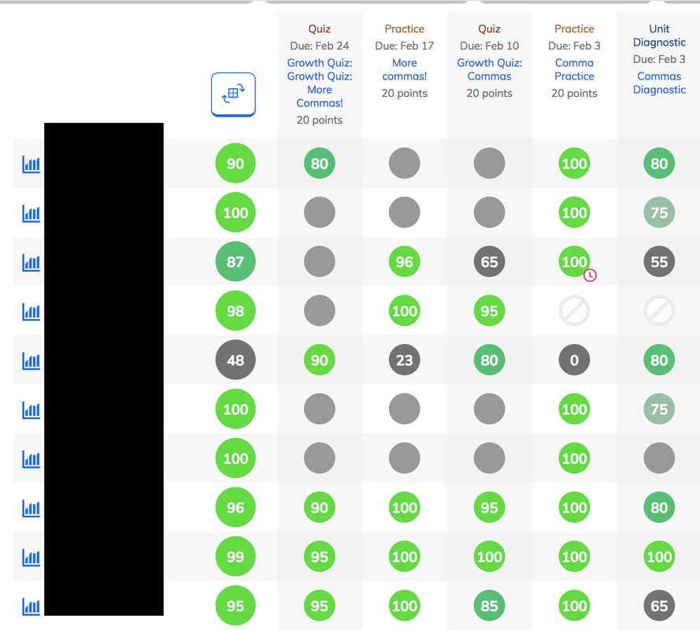
Teachers integrate and utilize appropriate available technology to engage students in authentic learning experiences.
RationaleKahoot is a great platform to drive student engagement, assess students' level of knowledge, and to do an activity that is more fun to students than reading and writing. The competitive nature drives students to do better. During my whole class reading unit, on The Curious Incident of the Dog in the Night-Time, we used Kahoots as both a break between more academic activities and as a tool to assess whether students were doing the reading in class. In this case, with the student in 7th place, I concluded that they were struggling with the reading and needed more attention.
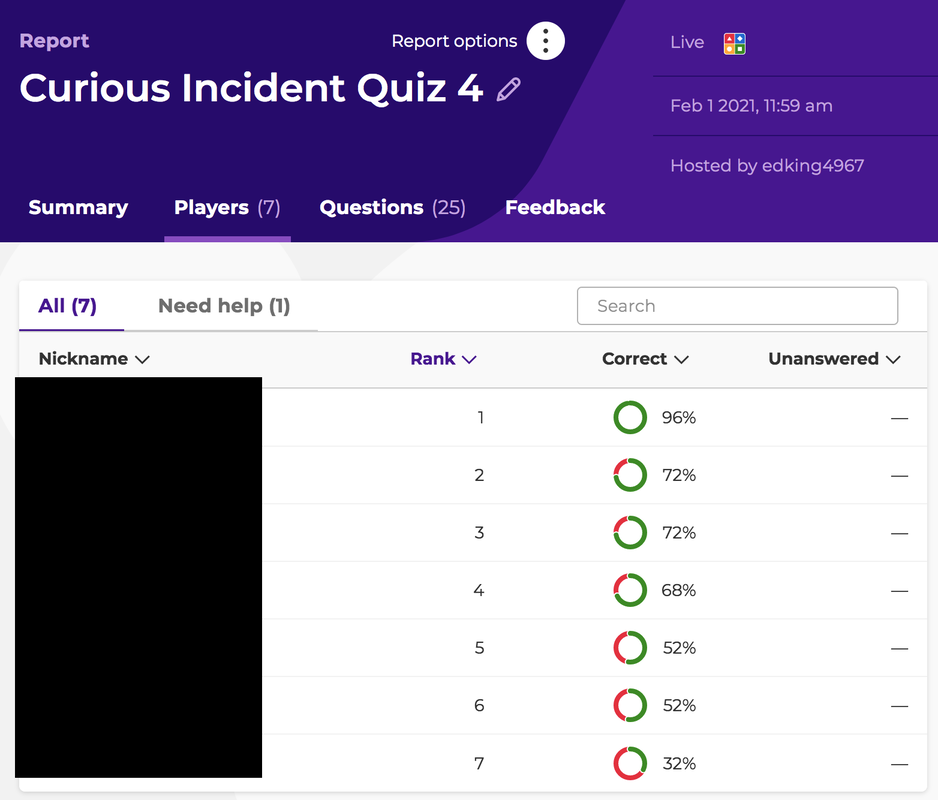
Teachers establish and communicate high expectations and use processes to support the development of critical-thinking and problem-solving skills.
RationaleWhen watching West Side Story in class, I gave students the assignment to write a review of the film. Students could analyze the sexism and racism inherent in the film as well as the music, dance, script, and other elements of the film. I wanted students to develop critical thinking skills to form their own opinion of the film. I set high expectations for them to do so. This became a challenge because of my desire to teach the positives of the film in addition to the negatives, while students overwhelmingly saw the negatives. It gave me experience in respecting and validating students' opinions even when they differ from mine. In future, if I were to teach this film, I would be more up front about the sexism and racism in the film and teach it as a product of its time, while encouraging students to pick out several positives of the film existing at the same time as the negatives.
Teachers provide students with opportunities to work in teams and develop leadership.
RationaleGroup work and teamwork are essential skills that students will carry forward into adult life. I provided multiple opportunities throughout the semester for students to work together on projects. One opportunity was to work on a script and video together to discuss the question "what makes a blockbuster?" One classmate could take a leadership role and divide up the tasks among the group. This project also allowed students to work together creatively with technology, where most students collaborated using the WeVideo platform. Working together on the project helped them develop the essential skills of communication and collaboration.
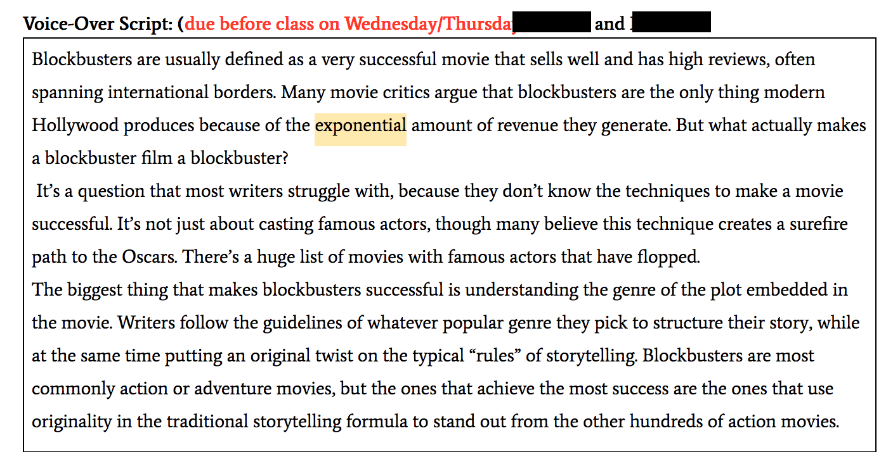
Teachers model and promote effective communication.
RationaleMicrosoft Teams is an important medium of communication in the classroom. It allows me to communicate with students over video and chat. On Fridays, when I catch up on grading, I often have questions for students regarding missing or incomplete assignments. I am able to communicate clearly through Teams with students who need to turn in assignments, or call them over voice or video to assist them when they need help.
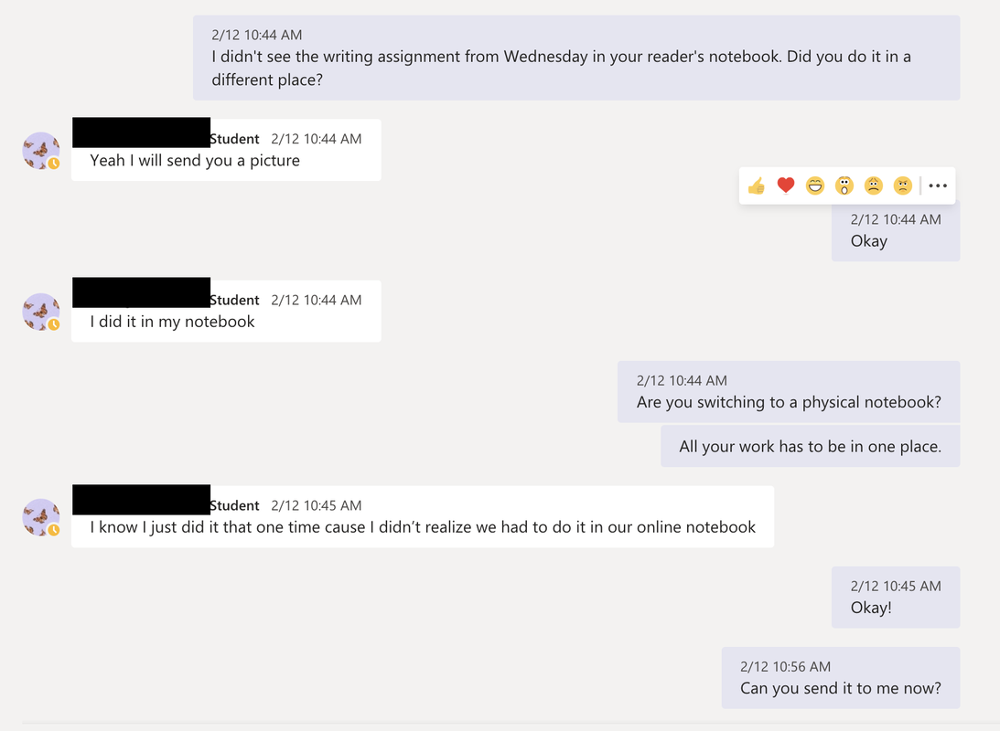
Teachers demonstrate high standards for professional conduct.
RationaleI strove to be professional in all my conduct. This starts with dressing professionally and extends to my conduct in every aspect of the classroom, from my demeanor to my communication with students. The school where I teach is in general less formal than other schools—teachers go by their first name and dress is often more casual than other schools. However, professionalism is still vital in the classroom, and I strive to model it in my actions and my words.
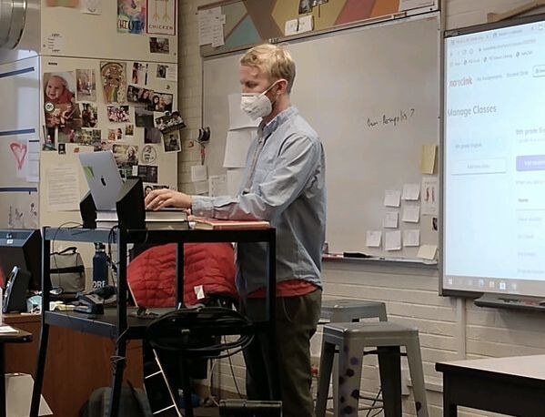
Teachers link professional growth to their professional goals.
RationaleFor my upcoming position at the STEAD School, I will be teaching music as well as English. As I have not taught music before, I decided to sign up for professional development for music. The professional development will focus on an online songwriting program. I am experienced with several digital audio editing programs, and it will be good to learn one that is accessible to all students. Overall, I feel that this professional development will lead to my being a better teacher in my role in the music program at STEAD.
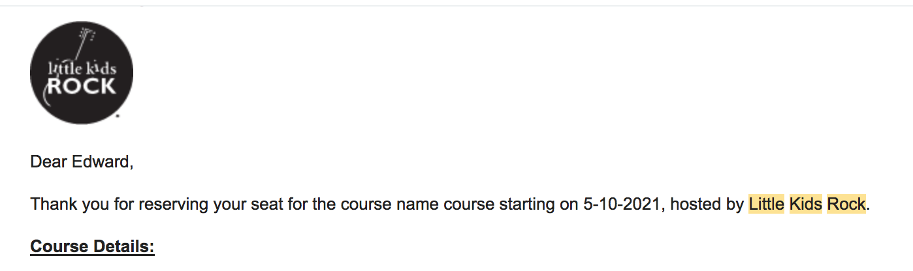
Teachers are able to respond to a complex, dynamic environment.
RationaleCOVID turned the school year on its head. We started in remote learning and moved to hybrid learning midway through the semester. This meant working in two paradigms that were unfamiliar even to the experienced staff at the school. We had to adapt to making material for synchronous and asynchronous class. The chart in the linked document shows my plan for the first week of school in hybrid learning. Students were instructed to read and complete work asynchronously, and join in class discussions and workshops synchronously. There were many bumps in the road, but going through the process made me a stronger teacher.
Teachers demonstrate leadership in the school, the community, and the teaching profession.
RationaleBased on research around the efficacy of choosing books to read in the classroom, I took it upon myself to design a choice book unit. In the unit, students read a book of their choosing and completed writing and reading tasks throughout the unit. Choice book reading has been shown to develop fluency, as students can read books they enjoy rather than having to read the books the teacher assigns. It allows them to read a greater volume and develop stamina as readers. Taking a leadership role with this unit helped me develop as a teacher and understand the demands of leading a class through unknown territory.
About Me
I am a teacher with a Master's in Education from CSU and a B.A. in English from CU who has taught English in China and English and Creative Writing at the STEAD School. I am a voracious reader of fiction and nonfiction, and I am passionate about literature and rhetoric. In my free time, I am writing a literary mystery novel about a girl who goes missing in China. Looking to return to my passion of teaching ELA after teaching math and engineering.
ELA Course Resources
Unit materials, video instruction, and assignment sheets.
Life of Pi Unit
For this unit, I wanted to explore the concepts of "yeastless factuality" (everyday reality) and "the better story" (the narratives we make together through stories) in Life of Pi. I designed a rubric to explore these ideas, with the product being either an essay or a podcast using claims and counterclaims to support a thesis.
Lesson VideoChoice Reading Assignment Sheet
For this unit, I wanted students to read a book of their choice. This was heavily inspired by Penny Kittle's "Book Love," which espouses the belief that students are more likely to find a love of reading through books of their own choice than class texts. I provided students with a list of books on multiple "tracks," with the flexibility to go "off-menu." This unit was very successful, with some students requesting more books to read.